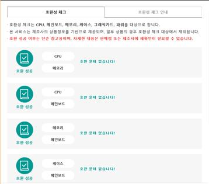
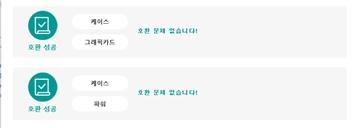
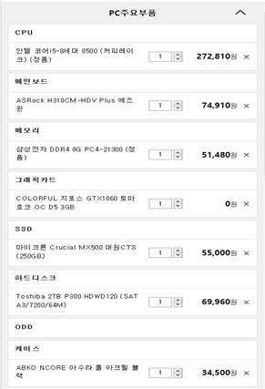
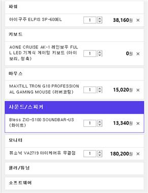

목차
1.목적
2.각 부품의 기능, 가격, 선정 이유
3.호환성 테스트
4.조립후기
1.목적
게임을 할 때 선명한 화질과 빠른 속도 등 일반 PC보다 최적화된 컴퓨터를 이용하기 위해서이다.
2.각 부품의 기능, 가격, 선정 이유
(1) CPU
✓ 제품명 : 인텔 코어i5-8세대 8500 (커피레이크)
✓ 가격 : 최저 259,330원
✓ 기능 : ‘Central Processing Unit’의 약자로서, 직역하면 중앙처리장치다. 단어 그대로, 컴퓨터의 정중앙에서 모든 데이터를 처리하는 장치라는 뜻이다. CPU는 컴퓨터의 두뇌에 해당하는 것으로서, 사용자로부터 입력받은 명령어를 해석, 연산한 후 그 결과를 출력하는 역할을 한다.
✓ 선정 이유 : 저전력 고성능 DDR4 메모리가 지원되고, 인텔 300시리즈 칩셋 호환되며, 인텔 터보 부스트 기술을 사용하여 고성능을 필요로 하는 작업에서 더욱 강력한 연산 능력을 제공하기 때문이다.
(2) 메인보드
✓ 제품명 : ASRock H310CM-HDV Plus 에즈윈
✓ 가격 : 최저 70,000원
✓ 기능 : PC의 기반을 이루는 주기판을 뜻하며, 구성품 간의 호환성이나 차후 기능 확장의 범위를 정하며, 궁극적으로는 PC 전반의 안정적인 동작 여부를 좌우하는 역할을 한다. 각 부품들을 하나로 연결해주는 회로를 가지고 있으며 밖으로 신호를 보낼 수 있는 출력 포트를 가지고 있는 있는 부품이다.
✓ 선정이유 : 전 세대보다 발전된 성능뿐만 아니라 낮은 발열과 높은 전력으로 효율성이 높고 멀티코어 시스템의 성능이 대폭 향상되어 멀티태스킹 작업이 쾌적해지고, 낮은 전력 소비와 낮은 발열량으로 안정성이 높아 멀티미디어와 게이밍 컴퓨터 구축에 효과적이기 때문이다.
(3) 메모리
✓ 제품명 : 삼성전자 DDR4 8G PC4-21300
✓ 가격 : 최저 46,700원
✓ 기능 : 정보를 저장하고 필요한 시점에 꺼내어 쓸 수 있는 하드웨어로써 기억 장치라고도 한다. 기억 장치는 주기억장치와 보조기억장치로 나누어지는데 주기억장치는 컴퓨터에서 연산하기 위한 자료와 연산 결과들을 저장하기 위한 장치로서 중앙처리장치의 일부이다. 보조기억장치는 컴퓨터 외부에 연결되는 주변장치로 지속적으로 자료를 저장할 때 사용한다.
✓ 선정이유 : 64비트의 빠른 속도로 데이터를 전송하고 높은 대역폭과 용량으로 데이터 인코딩 오류를 최소화할 뿐만 아니라 게임, 디자인 작업 등 어떠한 용도로 사용하더라도 끊김없이 원활하게 작업할 수 있기 때문이다.
(4) 그래픽카드
✓ 제품명 : COLORFUL 지포스 GTX1060 토마호크 OC D5 3GB
✓ 가격 : 최저 269,270원
✓ 기능 : CPU, 램, 하드디스크 등은 자체적으로 화면을 출력할 수 있는 기능을 갖추고 있지 않기 때문에 컴퓨터에서 처리되는 과정 및 결과를 눈으로 보기 위해서는 모니터가 필요한데, 모니터는 컴퓨터 내부의 그래픽카드를 통하여 화면에 정보를 싣게 된다. 즉, 그래픽카드에서 만들어진 신호가 모니터에서 빛으로 변환되어 인간의 눈으로 이해되는 것이다.
✓ 선정 이유 : 90mm 듀얼팬과 유얼 히트파이프, 히트싱크가 GPU에서 발생한 열을 빠르게 낮추고 알루미늄 백플레이트를 장착하여 PCB기판 보호와 휨 현상을 방지하여 내구성이 뛰어나기 때문이다.
(5) SSD
✓ 제품명 : 마이크론 Crucial MX500 대원CTS (250GB)
✓ 가격 : 최저 50,540원
✓ 기능 : 용도나 외관, 설치 방법 등은 HDD와 유사하지만 내부적으로 차이가 있는데, SSD는 HDD와 달리 자기디스크가 아닌 반도체를 이용해 데이터를 저장한다. 이러한 특성 덕분에 기계식인 하드 디스크 드라이브(HDD)의 문제인 긴 탐색 시간, 반응 시간, 기계적 지연, 실패율, 소음을 크게 줄여 준다. 그리고 물리적으로 움직이는 부품이 없기 때문에 작동 소음이 없으며 전력 소모도 적다. 이런 특성 덕분에 휴대용 컴퓨터에 SSD를 사용하면 배터리 유지시간을 늘릴 수 있다는 이점이 있다.
✓ 선정 이유 : 사진 560,000장, 동영상 880시간, 음악 500,000장을 저장할 수 있을 만큼 큰 용량과 기존 NAND에 비해 50%가량 전력소비량이 적은 반면, 수명 또한 10배 길기 때문이다.
(6) 하드디스크
✓ 제품명 : Toshiba 2TB P300 HDWD120 (SATA3/7200/64M)
✓ 가격 : 최저 70,000원
✓ 기능 : 컴퓨터의 보조 기억장치로 사용되며 자성 물질을 입힌 레코드 판처럼 생긴 디스크를 겹쳐 놓은 기억 장치이다.
✓ 선정 이유 : PMR 기술을 적용하여 데이터의 빈번한 읽기, 쓰기가 발생하는 전문가 작업 환경에서 더욱 안정적인 성능을 제공하고 메인 스토리지로의 역할을 충실하게 수행하기 때문이다. 또한 64MB의 고용량 캐쉬 메모리를 탑재하여 PC와 HDD 사이에 발생되는 데이터 처리의 병목 현상을 최소화하는 기능이 있기 때문이다.
(7) 케이스
✓ 제품명 : ABKO NCORE 아수라 풀 아크릴 블랙
✓ 가격 : 최저 34,500원
✓ 기능 : 컴퓨터의 주요 부품들을 둘러싸는 부분을 말한다. 모니터와 분리된 케이스가 일반적이지만 모니터와 하나가 된 케이스도 존재한다. 대한민국에서는 컴퓨터 케이스라는 용어 대신 본체(本體)라고 표현하는 경우가 대부분이다.
✓ 선정 이유 : 디자인이 심플하면서도 시크하고 튜닝에 최적화된 풀 아크릴 측판이 장착되어 있고 쿨링에 탁월한 전면 메쉬 타입으로 되어 있기 때문이다.
(8) 전원 공급 장치
✓ 제품명 : iGuju ELPIS SP-600EL
✓ 가격 : 최저 38,840원
✓ 기능 : 전원 공급 장치(power supply)는 컴퓨터 같은 전자 기기의 구동에 필요한 전력을 공급해 주는 장치로 입력 전력으로부터 필요한 출력 전력을 생성하는 전력 회로이다.
✓ 선정 이유 : 노이즈와 고주파를 없애주는 EMI필터와 과전압, 과전력으로부터 파워를 보호하는 퓨즈 등으로 장시간 사용에도 내구성이 손상되지 않고, 저소음 120mm Sleeve Bearing 팬을 적용하여 풍량은 증가시키고 소음은 감소 시킴으로써 저소음 컴퓨팅 환경을 만들기 때문이다.
(9) 운영체제
✓ 제품명 : Microsoft Windows 10 Home (DSP 한글 64bit)
✓ 가격 : 145,000원
✓ 기능 : 하드웨어를 제어하고 컴퓨터 자원을 관리하며, 컴퓨터 사용을 편리하게 해주고 응용 프로그램들의 수행을 도와주며, 사용자와 하드웨어 사이의 매개체 역할을 하는 소프트웨어이다.
✓ 선정 이유 : PC, 스마트폰 등 모든 기기에서 일관되게 사용하는 통합 OS이기 때문이다.
(10) 모니터
✓ 제품명 : 뷰소닉 VA2719 아이케어유 무결점
✓ 가격 : 최저 179,000원
✓ 기능 : 컴퓨터에서 만들어 낸 결과를 TV와 같은 원리로 표시해 주는 출력 장치이다.
✓ 선정 이유 : 베젤의 두께가 6.4mm 밖에 되지 않아 화면에 더 몰입할 수 있고 블루라이트가 없기 때문이다.
(1１) 키보드
✓ 제품명 : AONE CRUISE AK-1 레인보우 FULL LED 블랙 기계식 키보드
✓ 가격 : 최저 64,800원
✓ 기능 : 컴퓨터에 정보를 입력하는 기본적인 장치로 생김새는 타자기의 자판과 비슷하게 생겼으며 사용자가 자판을 누를 때 발생하는 전기 신호를 코드로 변환하여 컴퓨터로 전달한다.
✓ 선정 이유 : LED키캡으로 어두운 환경에서도 무리없이 사용이 가능하고, 알루미늄으로 상판을 만들어 내구성이 뛰어나며 양면 기판으로 설계되어 단면 기판에 비해 내구성이 강하고 발열이 적기 때문이다.
(12) 마우스
✓ 제품명 : MAXTILL TRON G10 PROFESSIONAL GAMING MOUSE (러버코팅)
✓ 가격 : 최저 18,500원
✓ 기능 : 컴퓨터 화면 위의 어떤 위치를 가리키고 그 위치로부터 다른 곳으로 이동하거나 선택하기 위해 사용되는 입력 장치이다.
✓ 선정 이유 : 센서가 안정적이며 페브릭 케이블로 선이 꼬이는 것을 방지하고 장시간 이용에도 끈적임이 발생하지 않기 때문이다.
(13) 사운드/스피커
✓ 제품명 : Bless ZIO-S100 SOUNDBAR-US (화이트)
✓ 가격 : 최저 13,900원
✓ 기능 : 컴퓨터 화면 속 영상이나 음성들을 밖으로 송출해주는 장치이다.
✓ 선정 이유 : 헤드폰단자 및 마이크단자를 전면에 배치하여 편리하고 별도의 어댑터 없이 USB를 통해 전원을 공급할 수 있기 때문이다.
총 합계 1,260,380원
3.호환성 테스트
   4.조립후기
평소 다 조립되어있는 본체만 구매해서 구성은 어떻게 되고 어떠한 원리로 돌아가는지 몰랐는데 사용 목적을 정하고 필요한 부품들은 무엇인지 부가적인 부품으로는 어떤 것들이 있는지 서로 호환은 되는지 하나 하나 따져가며 조립하다 보니 컴퓨터의 작동 원리를 알게 되었고 사용 목적에 따라 어떤 성능, 기능을 추가해야 하는지 확실히 알게 되었다.